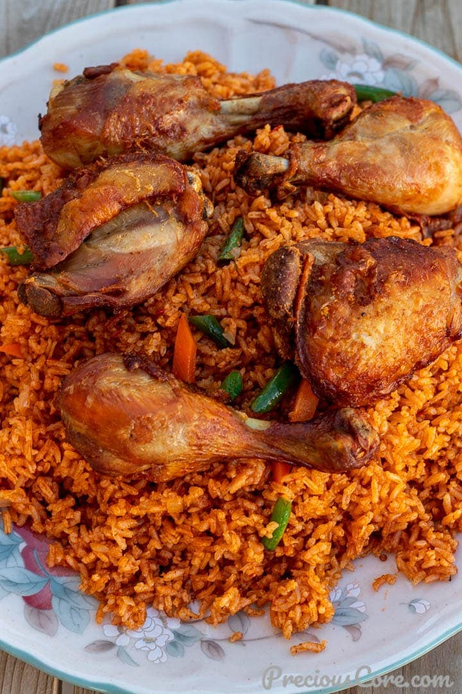
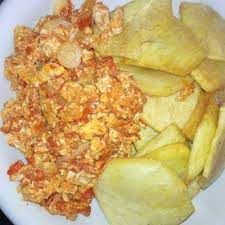
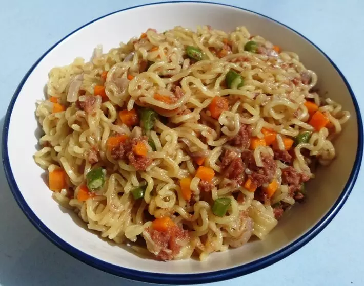

| 1 |
Jollof Rice |
Rice is a Stable food of every african Household and Nigeria is said to have the best jollof rice in Africa |
White Rice, Pepper, Tomato, Seasoning Cubes, |
fry the Ingredients for some minutes, add water, leave for some minutes, and boil the rice. |

|
| 2 |
Yam and Egg |
Yam and Egg is an intercontinental dish |
Yam, 2-3 egss depending on the number of people eating it, salt, Seasoning cubes |
Boil the yam, whishk the egg with a pinch of salt with Seasoning cubes, and fry the egg. Best enjoyed when hot |

|
| 3 |
Amala with Okra soup |
Amala with Okra is an indeginous meal of the southern people |
yam flour, okra, pepper, Seasoning cubes, fish |
Boil water, stir the yam flour, cook Okra with the Seasoning cubes |

|
| 4 |
Noodles |
Fast food majorly for kids |
Noodles of any brand, water |
Boil water, add the noodles, and wait to cook for 6mins |

|
| 5 |
Pap and Fries |
Pap and fries is a local food of the western people |
pap, fries could be Dodo, akara, or anyother desired compliments |
Boil water, stir the pap in cold water, add hot water to the pap and leave it to rise for some mins. It is best enjoyed with milk and sugar |

|
| 6 |
Ewa and Bread |
It is a special beans of the western people which is sold on the streets. |
Beans, pepper, Seasoning cubes, salt |
Cook the beans for hours, and prepare the sauce. |

|